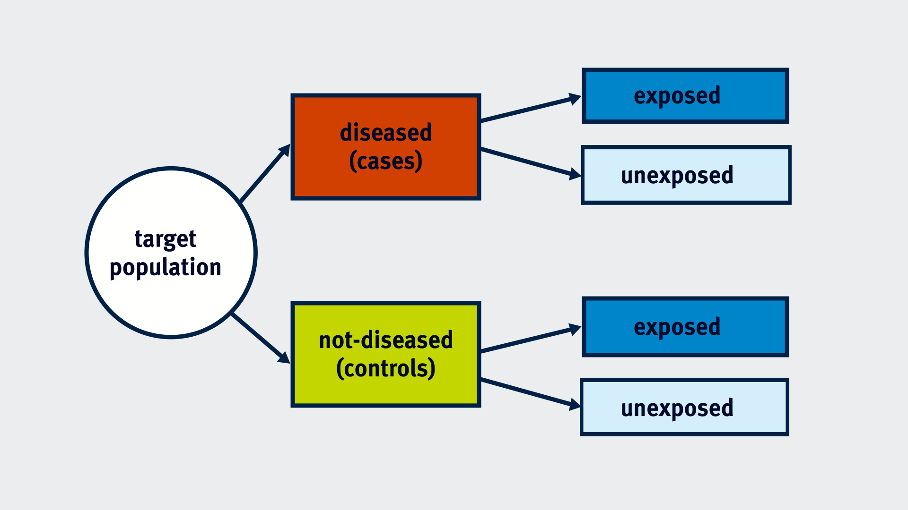
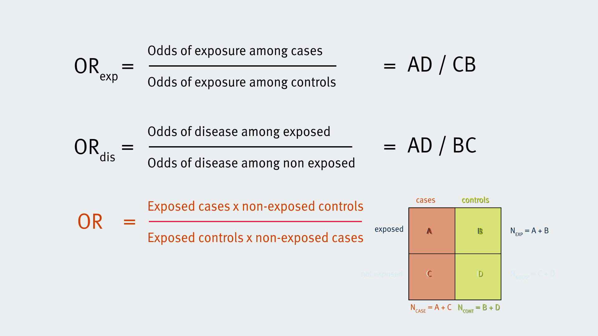

As a college student, I struggled to choose a career path and even the research of interest. I was amazed that there was a research field devoted to applying medicine and statistics to address the problems of health prevention and protection. That field is epidemiology. Epidemiologists are curious about why a specified population is more likely than others to become sick, be injured, or die young and why some countries and regions continue to be worst hit by the disease. That requires thinking about how the determinants of health such as biological pathways, social processes, and behavioral patterns culminate to put people at risk of illness and injury. Epidemiology research is concerned about not only every imaginable health outcome, from infant mortality to dementia, but every imaginable exposure, from air pollution to genetic polymorphisms, because there is a multitude of modifiable factors that influence health. This research is what I love.
Case reports and Case series
Case reports and Case series are descriptive epidemiological studies at the level of the individual.
Case reports
A case-report is normally a study of a single patient or the report of something that has occurred, such as an unusual case of a disease which is generally reported or observed by a physician. A case-report usually focuses on the clinical course, prognosis or outcome of a particular patient. Case-reports can help us identify novel issues and can lead to new hypotheses and avenues for research. However, case-reports are often subject to bias and suffer from low scientific rigour.
Example: Acquired immunodeficiency in an infant: possible transmission by means of blood products
The transmission pattern of AIDS by blood or blood products is not well-recognised until April 1983. An infant born with Rh incompatibility received blood products from 18 donors over eight weeks and subsequently developed unusual recurrent infections with opportunistic agents such as Candida. The infant’s T cell count was low, suggesting AIDS. There was no family history of immunodeficiency, but one of the blood donors had died of AIDS 17 months after donation. This led the investigators to hypothesize that AIDS could be transmitted by blood transfusion.
Case series
Case-series is a generally consecutive set of cases of a disease or condition identified usually by healthcare professionals or within a healthcare setting such as a hospital. The “series” can be either small or large. Similar to case-reports, they can identify potential hypotheses for testing in analytical studies before an association can be accpeted as valide. However, case-series are also subject to bias, as physicians or clinicians may self-select the cases and there is no comparison group.
Four previously healthy young men contracted Pneumocystis carinii pneumonia, an unusual “opportunistic” infection that had only been seen in immune compromised people with hereditary disorders or in people with immune compromise due to chemotherapy. Their medical histories didn’t suggest any preexisting immunodeficiency, but all had decreased immune responses and low T cell counts. These unusual infections suggested the possibility of a previously unknown disease. All four men were sexually active homosexuals, and the authors speculated that the immune dysfunction was due to a sexually transmitted infectious agent. This study alerts the medical establishment and was an important milestone in the AIDS epidemic.
Strengths and limitations of Case Reports and Case Series
Strengths
-
Built on avaiable clinic data and physicians’ observations, they are relatively quick and inexpensive
-
They may recognize new health problems and disease mechanisms
-
They may generate hypotheses based on similarities among group and lead to analytic studies
Limitations
-
The temporal relationship between the exposure and the health outcome is often unclear, i.e., it is not always clear that the exposure preceded the outcome
-
There is no comparison group.
Ecological study
Ecologic studies is an observational study that assesses the overall frequency of disease in a series of populations and looks for a correlation with the average exposure in the populations. These studies are based on agrregate data on groups. Therefore, the unit of observation is not a person; rather, it is an entire population or group.
The author looked at data on chocolate consumption and the number of Nobel Laureates at the country level. His observation unit was the country, and he used annual chocolate consumption per capita and Nobel Laureates per 10 million population. He used data aggregated by the country, making this an ecological study. Countries where people eat more chocolate have won more Nobel prizes. Many alternative explanations for this association, from the chance to bias and confounding, apply to all study designs.

Association does not always imply causation. But there is also something important to this ecological study design. Assuming that associations between groups hold for individuals is called ecological fallacy or aggregation bias. In this example, although there’s a clear association between chocolate consumption per capita and the number of Nobel prize winners, we have no clue regarding the chocolate consumption of the winners themselves. It could be that Nobel Laureates eat a lot of chocolate or no chocolate at all. We would need individual-level data to properly explore this question.
Strengths and limitations of ecological studies
Advantages
-
They are quick and inexpensive as the aggregated data is normally secondary and easy to access
-
They are useful for early exploration of relationships
-
They can compare phenomena across a wider range of populations and sites.
-
Some exposures of interest can only be studied with aggregate population level data, such as the effect of smoking bans and rates of heart attacks
Limitations
-
They do not know if the diseased people were exposed because of aggregated data use. i.e., it is not clear that the people who ate the most chocolate were the ones who were more like to receive a call from the Swedish Academy. This is sometimes referred to as “ecological bias” or the “ecological fallacy”
-
They do not adjust for other factors that influence the outcome. An apparent correlation, or the lack of a correlation could be misleading. For example, one might find a strong correlation between the average number of hours of TV viewing and the rate of coronary artery disease among different countries. However, this doesn’t necessarily mean that TV per se is a risk factor for CAD. There may be a number of other differences between the populations that are associated with higher rates of TV viewing: e.g., greater industrialization, less exercise, greater availability of processed foods and saturated fat, etc.
-
Ecologic studies can be misleading when evaluating non-linear relationships
Cross-sectional Study
Cross-sectional (individual surveys) simultaneously provide a “snapshot” of diseases and risk factors in a defined population. This study design assesses the prevalence of disease and the prevalence of risk factors at a point in time. The health questionnaires you are asked to fill out when you go to a new physician or are being processed for a new job are similar to cross-sectional surveys. It is important to note that cross-sectional surveys are not repeated in the same individuals, i.e., there is no follow-up. They are not longitudinal follow-up studies in which individuals are followed over time. Besides, the temporal relationship between exposure and disease outcomes can be unclear, i.e., which came first. However, the temporal relationship is clear in a cross-sectional survey under some circumstances. For example, if one surveyed salaries of male and female professors to see if sex was associated with salary inequities, we could regard this as an analytical study because it is clear that sex was established long before salary level.
Example: “Euphoria” or “Only Teardrops”? Eurovision Song Contest performance, life satisfaction and suicide
Case-control study
Case-control studies is that we select a group of individuals with the outcome of interest (cases) and a group of individuals without the outcome (controls), and we explore whether they have been exposed to the exposure under study. (From Imperial College’s School of Public Health)

Example: Bra wearing not associated with breast cancer risk: a population based case-control study
The measure of association that can be estimated in a case-control study is the odds ratio (OR).


Interpretation of OR
-
Odds ratio = 1 means no association
-
Odds ratio >1 indicates a positive association between exposure and disease (the exposure is associated with an increased risk of disease) (e.g., an odds ratio of 4 means that for individuals who are exposed to the risk factor of interest, the odds of disease is 4 times greater than the odds for those who are unexposed)
-
Odds ratio <1 indicates a negative association between exposure and disease (the exposure is associated with an decreased risk of disease)
Strengths and limitations of case-control studies
Case-control studies are another type of observational study where the investigator does not interfere or manipulate the exposure.
Advantages
-
One of the major strengths of a case-control study is that it is good for studying rare diseases.
-
Compared to cohort studies, it is also relatively inexpensive and has a shorter duration, reducing the time required to acquire results.
Limitations
-
Case-control studies are prone to selection bias. Selection bias can occur as a result of how the participants are recruited into the study; this bias can be related to the case-control status of the participant or the exposure status.
-
Case-control studies do not allow the investigation of multiple outcomes.
More information about case-control study: Case-Control Studies (bu.edu)
Cohort study
A cohort study is that a number of individuals without the disease or outcome of interest are selected and followed up for a period of time. Some of them are exposed to the exposure under study, while the rest are unexposed. By the end of the study period, some individuals will have developed the disease/outcome of interest both in the exposed and in the unexposed group. Cohort studies are warranted when the time between exposure and disease is relatively short, the occurrence of the disease is not rare, and when adequate funding is available.
Example:
The Framingham Heart Study and the Epidemiology of Cardiovascular Diseases: A Historical Perspective

Depending on the data you have collected during the follow-up period, we can calculate the risk (incidence) and/or the incidence rate of the disease in the exposed and the unexposed groups. Hence, we are able to calculate the Relative Risk or Risk Ratio (RR), the Risk Difference or Attributable Risk (AR) and the Incidence Rate Ratio (IRR).

-
RR = incidence (risk) in the exposed / incidence (risk) in the unexposed
-
RR = 1 suggests no difference in risk between the exposed and unexposed group
-
RR >1 suggests an increased risk of outcome in the exposed group
-
RR <1 suggests an decreased risk of outcome in the exposed group
-
-
AR = incidence (risk) in the exposed - incidence (risk) in the unexposed

Strengths and limitations of cohort studies
Cohort studies are another type of observational study where the investigator does not interfere or manipulate the exposure.
Advantages
-
They enable researchers to investigate multiple outcomes simultaneously.
-
The temporal relationship between exposure and disease can be explored. In other words, we can be certain that the exposure preceded the disease.
-
Cohort studies can allow researchers to calculate incidence rates as well as risks (and the respective ratios).
-
Cohort studies suffer from fewer ethical concerns as researchers are not assigning exposures or intervening with participants.
Limitations
-
One weakness of cohort studies is that they usually have a long duration which also implies larger costs.
-
Cohort studies are not useful for studying rare diseases.
-
Loss to follow-up which is likely to occur when running cohort studies can introduce bias.
-
In occupational cohorts, the healthy worker effect may introduce bias. The healthy worker effect refers to the low mortality or disease incidence in healthy populations or industrial cohorts compared to the general population.
More information on cohort studies: Cohort Studies (bu.cn)
Short Summary
Study Design | Question |
|---|---|
Case-Reports & Series | How common is this finding in a disease? |
Cross-Sectional | How common is this disease or condition? (Prevalence) |
Ecologic | What explains the differences between groups? |
Case-Control | What factors are associated with having a disease? (Odds ratios) |
Cohort | How many people will get the disease? |